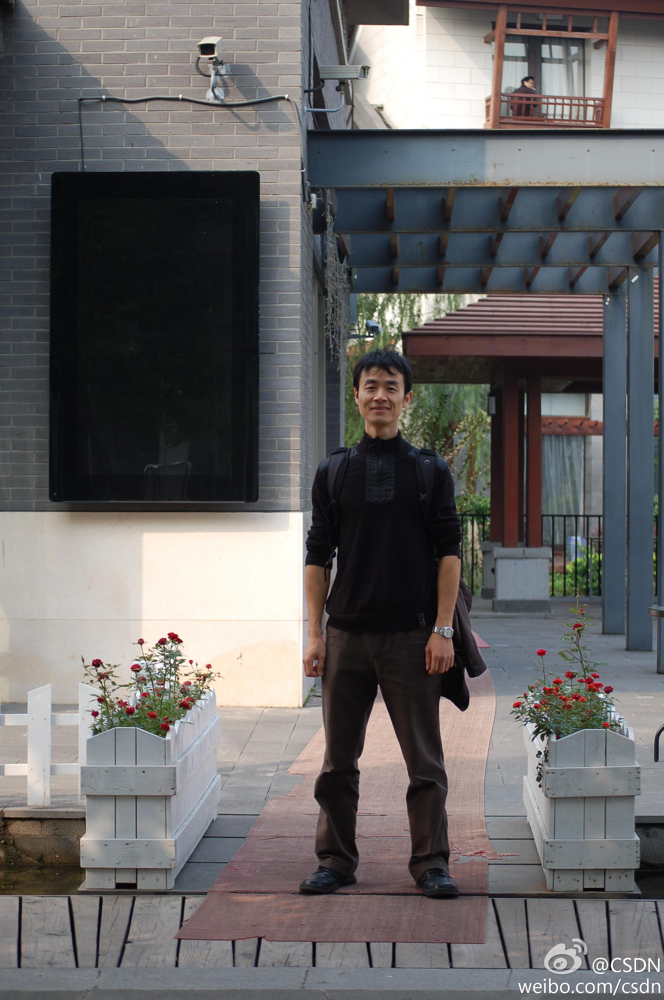

//@崔启亮-北京ISTQB:讲述了软件技术专家李云职业发展成功之道，总结的职场发展25条经验很有启发意义。李云的成功在于专注和较真，具有这种特质的人无论在通讯行业，还是互联网行业都是受人尊敬，并且能够持续成功的。当互联网大潮，特别是移动互联网大潮来临时，他能实现职场的华丽转身，傲立潮头！@CSDN:【专访李云：从通讯行业的架构师到互联网“新兵”】从事近十年的通讯行业后，毅然地投身至互联网行业中，在接近40岁的年纪，进入到了一个全新的行业，社区之星第40期待你走进阿里巴巴@至简李云 的世界，看其如何精彩的职场华丽变身。 网页链接 by@帘卷一庭秋 